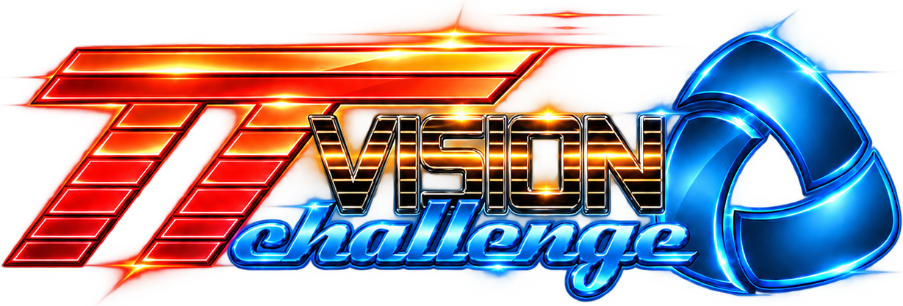
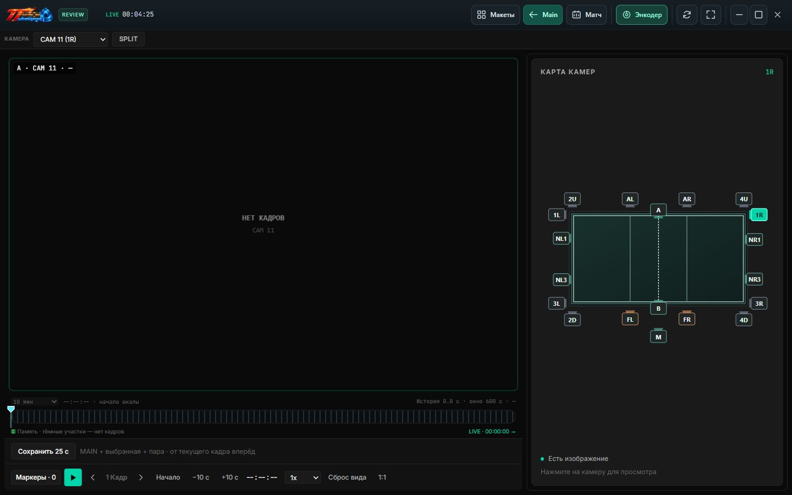

Один момент. Два ракурса.
Split размещает две камеры рядом для синхронного просмотра. Масштаб и положение изображения можно менять.

ВИДЕОПОВТОРЫ ДЛЯ СПОРТА
От спорного эпизода до решения.
Все нужные ракурсы, повтор и управление матчем в одной системе.
РАБОЧИЕ ИНСТРУМЕНТЫ TT VISION CHALLENGE
Камеры, макет и запись матча
Карта камер, Split, покадровый просмотр
Счёт, составы и управление матчем
Оформление матча на экране площадки
01 / ВНУТРИ ПРОГРАММЫ
Пример конфигурации TT Vision Challenge.
Камеры не подключены, поэтому области видео пустые.

Карта справа переключает камеру. Под изображением находятся шкала истории, переход по кадрам, скорость, маркеры и сохранение 25 секунд.
Split размещает две камеры рядом для синхронного просмотра. Масштаб и положение изображения можно менять.
Шкала времени, покадровые шаги и список маркеров помогают найти нужный момент в доступной истории.
Сохраняйте MAIN, выбранную камеру и парную камеру Split для последующего разбора.
02 / ОДНА СИСТЕМА. ВЕСЬ МАТЧ.
Общий план и детали игрового эпизода. Выбирайте камеру на карте площадки и сравнивайте ситуацию с разных сторон.
Пауза, покадровый просмотр и маркеры помогают возвращаться к важным моментам. Сохраняйте эпизоды для дальнейшего просмотра.
Счёт и составы команд. Управляйте ходом матча с пульта, пока оператор работает с видео.
Выводите счёт и составы на Broadcast. Во время пауз переключайтесь на подготовленные изображения и видеоролики.
03 / ОТ ЭПИЗОДА К РЕШЕНИЮ
Инструменты для оператора.
Больше информации для судьи.
Поставьте маркер, чтобы быстро вернуться к эпизоду.
Найдите камеру, с которой нужная деталь видна яснее.
Управляйте воспроизведением и сравнивайте изображения.
Оставьте видеоматериал для последующего разбора.
TT VISION CHALLENGE / ДЛЯ ВАШЕЙ ПЛОЩАДКИ
Рассматриваете покупку системы видеоповторов?
TT Vision Challenge объединяет работу с видео,
управление матчем и вывод на экран площадки.
ЕЩЁ НЕСКОЛЬКО ДЕТАЛЕЙ
TT Vision Challenge — приложение для работы с видеоповторами и управления матчем. На этом сайте представлены снимки настоящего интерфейса локальной сборки без подключённых камер. Это обзор программы, а не работающий видеоплеер в браузере.
Совместимость камер, сеть, накопители и производительность ПК проверяются для конкретной конфигурации. Количество камер, разрешение и частота кадров подбираются вместе, после проверки оборудования.
Да. Матч-контроллер предназначен для управления с отдельного устройства, а Broadcast выводит оформление матча на выбранный экран. Сеть и подключение дисплеев настраиваются для вашей площадки.
Сайт готовится к приёму обращений. Контакты для обсуждения покупки будут опубликованы здесь. Сейчас сайт не принимает заявки и платежи.